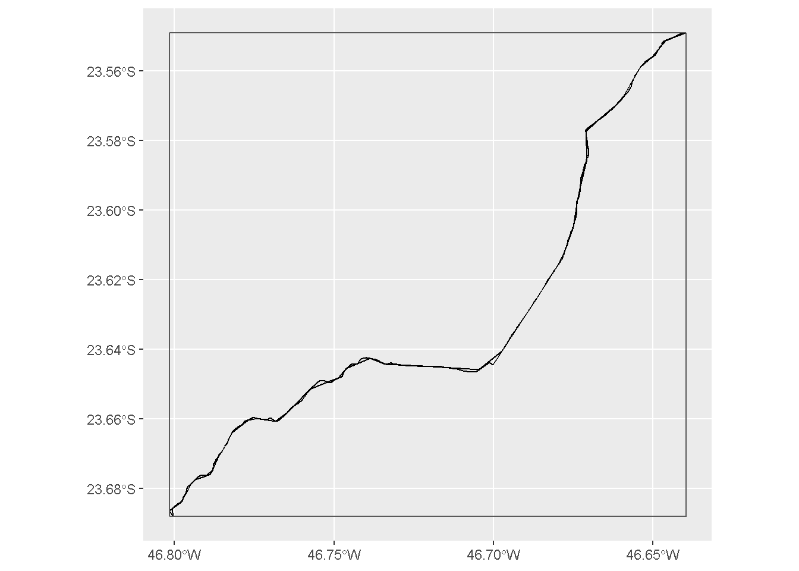
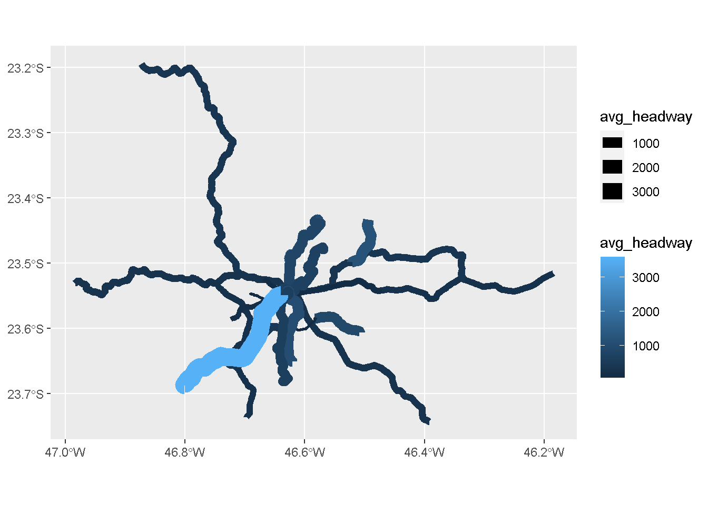

library(gtfstools)
path <- system.file("extdata/spo_gtfs.zip", package = "gtfstools")
gtfs <- read_gtfs(path)
names(gtfs)[1] "agency" "calendar" "frequencies" "routes" "shapes"
[6] "stop_times" "stops" "trips" Usualmente, arquivos GTFS oriundos de bases oficiais são utilizados para desenvolver análises e pesquisas que possuem diversos elementos comuns. Visando facilitar a leitura, o processamento e a análise desses dados, a equipe do Projeto Acesso a Oportunidades vêm desenvolvendo o pacote de R gtfstools1, que oferece diversas funções que facilitam a manipulação e a exploração de feeds.
Neste capítulo, nós iremos passar por algumas das funcionalidades mais frequentemente utilizadas do pacote. Para isso, vamos utilizar uma amostra do feed da SPTrans apresentado no capítulo anterior, disponível dentro do gtfstools.
A leitura de arquivos GTFS com o gtfstools é feita com a função read_gtfs(), que recebe uma string com o caminho do arquivo. Um feed é representado como uma lista de data.tables, uma versão de alta performance da classe data.frame. Ao longo deste capítulo, nós vamos nos referir a esta lista de tabelas como um objeto GTFS. Por padrão, a função lê todas as tabelas .txt do feed:
library(gtfstools)
path <- system.file("extdata/spo_gtfs.zip", package = "gtfstools")
gtfs <- read_gtfs(path)
names(gtfs)[1] "agency" "calendar" "frequencies" "routes" "shapes"
[6] "stop_times" "stops" "trips" Como podemos ver, cada data.table dentro do objeto GTFS é nomeado de acordo com a tabela que ele representa, porém sem a extensão .txt. Isso nos permite selecionar e manipular cada uma das tabelas separadamente. O código abaixo, por exemplo, mostra os 6 primeiros registros da tabela trips:
head(gtfs$trips) route_id service_id trip_id trip_headsign direction_id shape_id
1: CPTM L07 USD CPTM L07-0 JUNDIAI 0 17846
2: CPTM L07 USD CPTM L07-1 LUZ 1 17847
3: CPTM L08 USD CPTM L08-0 AMADOR BUENO 0 17848
4: CPTM L08 USD CPTM L08-1 JULIO PRESTES 1 17849
5: CPTM L09 USD CPTM L09-0 GRAJAU 0 17850
6: CPTM L09 USD CPTM L09-1 OSASCO 1 17851As tabelas dentro de um objeto GTFS podem ser facilmente manipuladas usando a sintaxe de tabelas data.table. O pacote data.table oferece diversas funcionalidades úteis, como a edição de colunas por referência, filtros de linhas muito rápidos e agregação de dados eficiente2. Para adicionar 100 segundos a todos os headways listados na tabela frequencies e reverter essa mudança em seguida, por exemplo, nós podemos usar o código abaixo:
# original
original_headway <- gtfs$frequencies$headway_secs
head(gtfs$frequencies, 3) trip_id start_time end_time headway_secs
1: CPTM L07-0 04:00:00 04:59:00 720
2: CPTM L07-0 05:00:00 05:59:00 360
3: CPTM L07-0 06:00:00 06:59:00 360# modified
gtfs$frequencies[, headway_secs := headway_secs + 100]
head(gtfs$frequencies, 3) trip_id start_time end_time headway_secs
1: CPTM L07-0 04:00:00 04:59:00 820
2: CPTM L07-0 05:00:00 05:59:00 460
3: CPTM L07-0 06:00:00 06:59:00 460# back to original
gtfs$frequencies[, headway_secs := original_headway]
head(gtfs$frequencies, 3) trip_id start_time end_time headway_secs
1: CPTM L07-0 04:00:00 04:59:00 720
2: CPTM L07-0 05:00:00 05:59:00 360
3: CPTM L07-0 06:00:00 06:59:00 360Ao final de edições de um objeto GTFS no R, frequentemente vamos querer usar o GTFS manipulado para fazer análises de diferentes tipos. Para isso, é comum que precisemos do arquivo GTFS em formato .zip novamente, e não da lista de tabelas dentro do R. O pacote disponibiliza a função write_gtfs() exatamente com a finalidade de transformar objetos GTFS que existem apenas dentro do R em arquivos GTFS salvos na memória de seu computador. Para usá-la, é necessário apenas listar o objeto e o endereço no qual ele deve ser salvo:
dest_path <- tempfile("new_gtfs", fileext = ".zip")
file.exists(dest_path)[1] FALSEwrite_gtfs(gtfs, dest_path)
file.exists(dest_path)[1] TRUE filename compressed_size timestamp
1 agency.txt 112 2022-09-29 20:34:08
2 calendar.txt 129 2022-09-29 20:34:08
3 frequencies.txt 2381 2022-09-29 20:34:08
4 routes.txt 659 2022-09-29 20:34:08
5 shapes.txt 160470 2022-09-29 20:34:08
6 stop_times.txt 7907 2022-09-29 20:34:08
7 stops.txt 18797 2022-09-29 20:34:08
8 trips.txt 717 2022-09-29 20:34:08Arquivos GTFS são frequentemente utilizados em estimativas de roteamento de transporte público e para informar passageiros sobre a tabela de horários das diferentes rotas que operam em uma região. Dessa forma, é extremamente importante que o cronograma das viagens e a velocidade operacional de cada linha estejam adequadamente descritos no feed.
O gtfstools disponibiliza a função get_trip_speed() para facilitar o cálculo da velocidade de cada viagem presente no feed. Por padrão a função retorna a velocidade (em km/h) de todas as viagens do GTFS, mas viagens individuais também podem ser especificadas:
speeds <- get_trip_speed(gtfs)
head(speeds) trip_id origin_file speed
1: 2002-10-0 shapes 8.952511
2: 2105-10-0 shapes 10.253365
3: 2105-10-1 shapes 9.795292
4: 2161-10-0 shapes 11.182534
5: 2161-10-1 shapes 11.784458
6: 4491-10-0 shapes 13.203560nrow(speeds)[1] 36speeds <- get_trip_speed(gtfs, trip_id = c("CPTM L07-0", "2002-10-0"))
speeds trip_id origin_file speed
1: 2002-10-0 shapes 8.952511
2: CPTM L07-0 shapes 26.787768Calcular a velocidade de uma viagem requer que nós saibamos o seu comprimento e em quanto tempo ela foi realizada. Para isso, portanto, a get_trip_speed() utiliza duas outras funções do gtfstools por trás dos panos: a get_trip_length() e a get_trip_duration(). O funcionamento das duas é muito parecido com o mostrado anteriormente, retornando o comprimento/duração de todas as viagens por padrão, ou de apenas algumas selecionadas, caso desejado. Abaixo nós mostramos seus comportamentos padrões:
length <- get_trip_length(gtfs, file = "shapes")
head(length) trip_id length origin_file
1: CPTM L07-0 60.71894 shapes
2: CPTM L07-1 60.71894 shapes
3: CPTM L08-0 41.79037 shapes
4: CPTM L08-1 41.79037 shapes
5: CPTM L09-0 31.88906 shapes
6: CPTM L09-1 31.88906 shapesduration <- get_trip_duration(gtfs)
head(duration) trip_id duration
1: 2002-10-0 48
2: 2105-10-0 108
3: 2105-10-1 111
4: 2161-10-0 94
5: 2161-10-1 93
6: 4491-10-0 69Assim como a get_trip_speed() retorna velocidades em km/h por padrão, a get_trip_length() retorna os comprimentos em km e a get_trip_duration() retorna a duração em minutos. Essas unidades podem ser ajustadas com o argumento unit, presente em todas as funções.
Muitas vezes o processo de processamento e edição de arquivos GTFS é realizado, em grande medida, manualmente. Consequentemente, pequenas inconsistências podem passar batidas pelos responsáveis por esse processamento. Um problema comumente observado em feeds é a presença de registros duplicados em uma mesma tabela. O feed da SPTrans, por exemplo, possui registros duplicados tanto no agency.txt quanto no calendar.txt:
gtfs$agency agency_id agency_name agency_url
1: 1 SPTRANS http://www.sptrans.com.br/?versao=011019
2: 1 SPTRANS http://www.sptrans.com.br/?versao=011019
agency_timezone agency_lang
1: America/Sao_Paulo pt
2: America/Sao_Paulo ptgtfs$calendar service_id monday tuesday wednesday thursday friday saturday sunday
1: USD 1 1 1 1 1 1 1
2: U__ 1 1 1 1 1 0 0
3: US_ 1 1 1 1 1 1 0
4: _SD 0 0 0 0 0 1 1
5: __D 0 0 0 0 0 0 1
6: _S_ 0 0 0 0 0 1 0
7: USD 1 1 1 1 1 1 1
8: U__ 1 1 1 1 1 0 0
9: US_ 1 1 1 1 1 1 0
10: _SD 0 0 0 0 0 1 1
11: __D 0 0 0 0 0 0 1
12: _S_ 0 0 0 0 0 1 0
start_date end_date
1: 2008-01-01 2020-05-01
2: 2008-01-01 2020-05-01
3: 2008-01-01 2020-05-01
4: 2008-01-01 2020-05-01
5: 2008-01-01 2020-05-01
6: 2008-01-01 2020-05-01
7: 2008-01-01 2020-05-01
8: 2008-01-01 2020-05-01
9: 2008-01-01 2020-05-01
10: 2008-01-01 2020-05-01
11: 2008-01-01 2020-05-01
12: 2008-01-01 2020-05-01O gtfstools disponibiliza a função remove_duplicates() para remover essas duplicatas. Esta função recebe como input um objeto GTFS e retorna o mesmo objeto, porém sem registros duplicados:
no_dups_gtfs <- remove_duplicates(gtfs)
no_dups_gtfs$agency agency_id agency_name agency_url
1: 1 SPTRANS http://www.sptrans.com.br/?versao=011019
agency_timezone agency_lang
1: America/Sao_Paulo ptno_dups_gtfs$calendar service_id monday tuesday wednesday thursday friday saturday sunday
1: USD 1 1 1 1 1 1 1
2: U__ 1 1 1 1 1 0 0
3: US_ 1 1 1 1 1 1 0
4: _SD 0 0 0 0 0 1 1
5: __D 0 0 0 0 0 0 1
6: _S_ 0 0 0 0 0 1 0
start_date end_date
1: 2008-01-01 2020-05-01
2: 2008-01-01 2020-05-01
3: 2008-01-01 2020-05-01
4: 2008-01-01 2020-05-01
5: 2008-01-01 2020-05-01
6: 2008-01-01 2020-05-01Frequentemente, também, lidamos com múltiplos feeds em uma mesma área de estudo. Neste caso, muitas vezes gostaríamos de uni-los em um único arquivo, diminuindo assim o esforço de manipulação e processamento dos dados. Para isso, o gtfstools disponibiliza a função merge_gtfs(). O exemplo abaixo mostra o resultado da combinação de dois feeds distintos, o da SPTrans (sem duplicatas) e o da EMTU, de Porto Alegre:
poa_path <- system.file("extdata/poa_gtfs.zip", package = "gtfstools")
poa_gtfs <- read_gtfs(poa_path)
poa_gtfs$agency agency_id agency_name agency_url
1: EPTC Empresa Publica de Transportes e Circulação http://www.eptc.com.br
agency_timezone agency_lang agency_phone
1: America/Sao_Paulo pt 156
agency_fare_url
1: http://www2.portoalegre.rs.gov.br/eptc/default.php?p_secao=155no_dups_gtfs$agency agency_id agency_name agency_url
1: 1 SPTRANS http://www.sptrans.com.br/?versao=011019
agency_timezone agency_lang
1: America/Sao_Paulo ptcombined_gtfs <- merge_gtfs(no_dups_gtfs, poa_gtfs)
combined_gtfs$agency agency_id agency_name
1: 1 SPTRANS
2: EPTC Empresa Publica de Transportes e Circulação
agency_url agency_timezone agency_lang
1: http://www.sptrans.com.br/?versao=011019 America/Sao_Paulo pt
2: http://www.eptc.com.br America/Sao_Paulo pt
agency_phone agency_fare_url
1:
2: 156 http://www2.portoalegre.rs.gov.br/eptc/default.php?p_secao=155Como podemos ver, os registros das tabelas de ambos os feeds foram combinados em uma única tabela. Este é o caso quando os dois (ou mais, caso desejado) objetos GTFS possuem registros de uma mesma tabela (a agency, no exemplo). Caso apenas um dos objetos possua uma das tabelas, o resultado da operação de combinação copia esta tabela para o resultado final. É o caso, por exemplo, da tabela frequencies, que existe apenas no feed da SPTrans, mas não no da EMTU:
names(poa_gtfs)[1] "agency" "calendar" "routes" "shapes" "stop_times"
[6] "stops" "trips" names(no_dups_gtfs)[1] "agency" "calendar" "frequencies" "routes" "shapes"
[6] "stop_times" "stops" "trips" names(combined_gtfs)[1] "agency" "calendar" "frequencies" "routes" "shapes"
[6] "stop_times" "stops" "trips" identical(no_dups_gtfs$frequencies, combined_gtfs$frequencies)[1] TRUEUm outro tipo de operação muito utilizada no tratamento de arquivos GTFS é o de filtragem desses arquivos. Frequentemente, feeds são usados para descrever redes de transporte público de grandíssima escala, transformando sua edição, análise e transferência em operações complexas. Por esse motivo, pesquisadores e planejadores muitas vezes precisar trabalhar com um subconjunto de dados descritos nos feeds. Caso desejemos estimar a acessibilidade de uma determinada região no horário de pico da manhã, por exemplo, podemos filtrar o nosso arquivo GTFS de modo a manter apenas os registros referentes a viagens que ocorrem nesse intervalo do dia.
O pacote gtfstools também traz diversas funções para facilitar a filtragem de arquivos GTFS. São elas:
filter_by_agency_id()filter_by_route_id()filter_by_service_id()filter_by_shape_id()filter_by_stop_id()filter_by_trip_id()filter_by_route_type()filter_by_weekday()filter_by_time_of_day()filter_by_sf()As seis primeiras (filter_by_agency_id(), filter_by_route_id(), filter_by_service_id(), filter_by_shape_id(), filter_by_stop_id() e filter_by_trip_id()) funcionam de forma muito similar. O usuário deve especificar uma vetor de identificadores, e a função mantém no objeto GTFS apenas os registros referentes a esses identificadores. O exemplo abaixo demonstra essa funcionalidade com a filter_by_trip_id():
lobstr::obj_size(gtfs)770.22 kBhead(gtfs$trips[, .(trip_id, trip_headsign, shape_id)]) trip_id trip_headsign shape_id
1: CPTM L07-0 JUNDIAI 17846
2: CPTM L07-1 LUZ 17847
3: CPTM L08-0 AMADOR BUENO 17848
4: CPTM L08-1 JULIO PRESTES 17849
5: CPTM L09-0 GRAJAU 17850
6: CPTM L09-1 OSASCO 17851smaller_gtfs <- filter_by_trip_id(gtfs, trip_id = c("CPTM L07-0", "CPTM L07-1"))
lobstr::obj_size(smaller_gtfs)61.62 kBhead(smaller_gtfs$trips[, .(trip_id, trip_headsign, shape_id)]) trip_id trip_headsign shape_id
1: CPTM L07-0 JUNDIAI 17846
2: CPTM L07-1 LUZ 17847unique(smaller_gtfs$shapes$shape_id)[1] "17846" "17847"O código acima mostra que a função não filtra apenas a tabela trips, mas também as outras tabelas que fazem referência aos identificadores especificados. Por exemplo, a trajetória das viagens CPTM L07-0 and CPTM L07-1 é descrita pelos shape_ids 17846 and 17847, respectivamente. Esses são, portanto, os únicos identificadores da tabela shapes mantidos no GTFS filtrado.
A função também funciona com o comportamento diametralmente oposto: em vez de definirmos os identificadores cujos registros devem ser mantidos no feed, especificamos os identificadores que devem ser retirados dele. Para isso, usamos o argumento keep com valor FALSE:
smaller_gtfs <- filter_by_trip_id(
gtfs,
c("CPTM L07-0", "CPTM L07-1"),
keep = FALSE
)
head(smaller_gtfs$trips[, .(trip_id, trip_headsign, shape_id)]) trip_id trip_headsign shape_id
1: CPTM L08-0 AMADOR BUENO 17848
2: CPTM L08-1 JULIO PRESTES 17849
3: CPTM L09-0 GRAJAU 17850
4: CPTM L09-1 OSASCO 17851
5: CPTM L10-0 RIO GRANDE DA SERRA 17852
6: CPTM L10-1 BRÁS 17853[1] "17848" "17849" "17850" "17851" "17852" "17853"Como podemos ver, as viagens especificadas, bem como suas trajetórias, não estão presentes no GTFS filtrado. A mesma lógica aqui demonstrada com a filter_by_trip_id() é válida para as funções que filtram objetos GTFS pelos identificadores agency_id, route_id, service_id, shape_id, stop_id e route_type.
Outra operação que recorrentemente aparece em análises que envolvem dados GTFS é a de manter serviços que funcionem apenas em determinados horários do dia ou dias da semana. Para isso, o pacote disponibiliza as funções filter_by_weekday() e filter_by_time_of_day().
A filter_by_weekday() recebe os dias da semana (em inglês) cujos serviços que neles operam devem ser mantidos. Adicionalmente, a função também inclui o argumento combine, que define como filtros de dois ou mais dias funcionam. Quando este recebe o valor ”and”, apenas serviços que operam em todos os dias especificados são mantidos. Quando recebe o valor ”or”, serviços que operam em pelo menos um dos dias são mantidos:
smaller_gtfs <- filter_by_weekday(
no_dups_gtfs,
weekday = c("saturday", "sunday"),
combine = "and"
)
smaller_gtfs$calendar[, c("service_id", "sunday", "saturday")] service_id sunday saturday
1: USD 1 1
2: _SD 1 1smaller_gtfs <- filter_by_weekday(
no_dups_gtfs,
weekday = c("sunday", "saturday"),
combine = "or"
)
smaller_gtfs$calendar[, c("service_id", "sunday", "saturday")] service_id sunday saturday
1: USD 1 1
2: US_ 0 1
3: _SD 1 1
4: __D 1 0
5: _S_ 0 1A filter_by_time_of_day(), por sua vez, recebe o começo e o final de uma janela de tempo e mantém os registros relacionados a viagens que rodam dentro dessa janela. O funcionamento da função depende da presença ou não da tabela frequencies no GTFS: o cronograma descrito na stop_times das viagens descritas na tabela frequencies não deve ser filtrado, pois, como comentado no capítulo anterior, ele serve como um modelo que dita o tempo de viagem entre uma parada e outra. Caso a frequencies esteja ausente, no entanto, a stop_times é filtrada segundo o intervalo de tempo especificado. Vamos ver como isso funciona com um exemplo:
smaller_gtfs <- filter_by_time_of_day(gtfs, from = "05:00:00", to = "06:00:00")
head(smaller_gtfs$frequencies) trip_id start_time end_time headway_secs
1: CPTM L07-0 05:00:00 05:59:00 360
2: CPTM L07-1 05:00:00 05:59:00 360
3: CPTM L08-0 05:00:00 05:59:00 480
4: CPTM L08-1 05:00:00 05:59:00 480
5: CPTM L09-0 05:00:00 05:59:00 480
6: CPTM L09-1 05:00:00 05:59:00 480 trip_id departure_time arrival_time
1: CPTM L07-0 04:00:00 04:00:00
2: CPTM L07-0 04:08:00 04:08:00
3: CPTM L07-0 04:16:00 04:16:00
4: CPTM L07-0 04:24:00 04:24:00
5: CPTM L07-0 04:32:00 04:32:00
6: CPTM L07-0 04:40:00 04:40:00frequencies <- gtfs$frequencies
gtfs$frequencies <- NULL
smaller_gtfs <- filter_by_time_of_day(gtfs, from = "05:00:00", to = "06:00:00")
head(smaller_gtfs$stop_times[, c("trip_id", "departure_time", "arrival_time")]) trip_id departure_time arrival_time
1: CPTM L07-0 05:04:00 05:04:00
2: CPTM L07-0 05:12:00 05:12:00
3: CPTM L07-0 05:20:00 05:20:00
4: CPTM L07-0 05:28:00 05:28:00
5: CPTM L07-0 05:36:00 05:36:00
6: CPTM L07-0 05:44:00 05:44:00O filtro da tabela stop_times pode funcionar de duas formas distintas. Uma opção é manter intactas todas as viagens que cruzam a janela de tempo especificada. A outra é manter apenas os segmentos de viagens que ocorrem dentro da janela (comportamento padrão da função). Este comportamento é controlado com o parâmetro full_trips, como mostrado a seguir (prestem atenção nos horários e nos segmentos presentes em cada exemplo):
smaller_gtfs <- filter_by_time_of_day(
gtfs,
"05:00:00",
"06:00:00",
full_trips = TRUE
)
head(
smaller_gtfs$stop_times[
,
c("trip_id", "departure_time", "arrival_time", "stop_sequence")
]
) trip_id departure_time arrival_time stop_sequence
1: CPTM L07-0 04:00:00 04:00:00 1
2: CPTM L07-0 04:08:00 04:08:00 2
3: CPTM L07-0 04:16:00 04:16:00 3
4: CPTM L07-0 04:24:00 04:24:00 4
5: CPTM L07-0 04:32:00 04:32:00 5
6: CPTM L07-0 04:40:00 04:40:00 6smaller_gtfs <- filter_by_time_of_day(
gtfs,
"05:00:00",
"06:00:00",
full_trips = FALSE
)
head(
smaller_gtfs$stop_times[
,
c("trip_id", "departure_time", "arrival_time", "stop_sequence")
]
) trip_id departure_time arrival_time stop_sequence
1: CPTM L07-0 05:04:00 05:04:00 9
2: CPTM L07-0 05:12:00 05:12:00 10
3: CPTM L07-0 05:20:00 05:20:00 11
4: CPTM L07-0 05:28:00 05:28:00 12
5: CPTM L07-0 05:36:00 05:36:00 13
6: CPTM L07-0 05:44:00 05:44:00 14Por fim, o pacote também disponibiliza uma função que permite filtrar o objeto GTFS usando um polígono espacial. A filter_by_sf() recebe um objeto do tipo sf/sfc (representação espacial estabelecida pelo pacote sf), ou sua bounding box, e mantém os registros cujas viagens são selecionadas por uma operação espacial especificada pelo usuário. Embora aparentemente complicado, este processo de filtragem é muito facilmente compreendido quando apresentado visualmente. Para isso, vamos criar uma função auxiliar:
library(ggplot2)
plotter <- function(gtfs,
geom,
spatial_operation = sf::st_intersects,
keep = TRUE,
do_filter = TRUE) {
if (do_filter) {
gtfs <- filter_by_sf(gtfs, geom, spatial_operation, keep)
}
shapes <- convert_shapes_to_sf(gtfs)
trips <- get_trip_geometry(gtfs, file = "stop_times")
geom <- sf::st_as_sfc(geom)
ggplot() +
geom_sf(data = trips) +
geom_sf(data = shapes) +
geom_sf(data = geom, fill = NA)
}Esta função:
filter_by_sf(), com a exceção do parâmetro do_filter, usado para mostrar os dados não filtrados;geom;convert_shapes_to_sf() e get_trip_geometry();Vamos usar como exemplo a filtragem usando a bounding box da trajetória de id 68962. O código abaixo apresenta a distribuição espacial dos dados não filtrados:
bbox <- sf::st_bbox(convert_shapes_to_sf(gtfs, shape_id = "68962"))
plotter(gtfs, bbox, do_filter = FALSE)
Notem aqui que nós usamos a função convert_shapes_to_sf(), que converte uma determinada trajetória descrita no GTFS em um objeto espacial do tipo sf, para obter a bounding box da trajetória. Por padrão, a filter_by_sf() (e a plotter(), consequentemente) mantém os dados relacionados aos registros de viagens cujas trajetórias possuem alguma interseção com o polígono espacial selecionado:
plotter(gtfs, bbox)
Nós podemos, no entanto, controlar a operação espacial usada no processo de filtragem. Por exemplo, o código abaixo mostra como nós podemos manter os dados relacionados a viagens que estão contidas dentro do polígono espacial:
plotter(gtfs, bbox, spatial_operation = sf::st_contains)
Como mostrado nas seções anteriores, o gtfstools disponibiliza uma grande caixa de ferramentas que podem ser usadas no processamento e na análise de arquivos GTFS. O pacote, no entanto, oferece diversas outras funções que não puderam ser apresentadas neste livro, por questões de espaço. A lista completa de funções disponíveis no pacote pode ser conferida no site do gtfstools.
A apresentação das funções feitas até aqui tem um importante caráter demonstrativo, porém não mostra como elas podem ser usadas de forma conjunta no desenvolvimento de uma análise de um arquivo GTFS. Esta seção preenche esta lacuna, mostrando como o pacote pode ser usado em uma análise simples, que visa responder a seguinte pergunta: como se distribuem espacialmente os tempos entre veículos de uma mesma linha (ou seja, o headway) no GTFS da SPTrans?
A primeira etapa é definir o escopo da nossa análise. A fim de exemplo, vamos considerar o headway no pico da manhã, entre 7h e 9h, em uma típica terça-feira de operação. Para isso, precisamos filtrar o nosso feed:
gtfs <- read_gtfs(path)
filtered_gtfs <- gtfs |>
remove_duplicates() |>
filter_by_weekday("tuesday") |>
filter_by_time_of_day(from = "07:00:00", to = "09:00:00")
filtered_gtfs$frequencies[trip_id == "2105-10-0"] trip_id start_time end_time headway_secs
1: 2105-10-0 07:00:00 07:59:00 900
2: 2105-10-0 08:00:00 08:59:00 1200filtered_gtfs$calendar service_id monday tuesday wednesday thursday friday saturday sunday
1: USD 1 1 1 1 1 1 1
2: U__ 1 1 1 1 1 0 0
start_date end_date
1: 2008-01-01 2020-05-01
2: 2008-01-01 2020-05-01Em seguida, precisamos calcular o headway dentro do período estabelecido. Essa informação pode ser encontrada na tabela frequencies, porém há um elemento complicador: cada viagem está associada a mais de um headway, como podemos ver acima. Para resolver esta questão, portanto, vamos calcular o headway médio* neste período.
Os primeiros registros da tabela frequencies do GTFS da SPTrans parecem sugerir que os períodos do dia estão listados sempre de uma em uma hora, porém isto não é uma regra estabelecida na especificação GTFS e nem é a prática adotada em outros GTFS. Por isso, nós vamos calcular a média ponderada do headway no período especificado. Para isso, nós precisamos multiplicar cada headway pelo intervalo de tempo em que ele é válido, e dividir o total desta soma pelo intervalo de tempo total (duas horas). Para calcular o intervalo de tempo em que cada headway é válido, nós usamos a função convert_time_to_seconds() para calcular o começo e o fim do intervalo em segundos e subtraímos o valor do fim pelo do começo, como abaixo:
filtered_gtfs <- convert_time_to_seconds(filtered_gtfs)
filtered_gtfs$frequencies[trip_id == "2105-10-0"] trip_id start_time end_time headway_secs start_time_secs end_time_secs
1: 2105-10-0 07:00:00 07:59:00 900 25200 28740
2: 2105-10-0 08:00:00 08:59:00 1200 28800 32340filtered_gtfs$frequencies[, time_interval := end_time_secs - start_time_secs]Em seguida, nós calculamos o headway médio:
avg_headway <- filtered_gtfs$frequencies[
,
.(avg_headway = weighted.mean(headway_secs, w = time_interval)),
by = trip_id
]
avg_headway[trip_id == "2105-10-0"] trip_id avg_headway
1: 2105-10-0 1050head(avg_headway) trip_id avg_headway
1: CPTM L07-0 360
2: CPTM L07-1 360
3: CPTM L08-0 300
4: CPTM L08-1 300
5: CPTM L09-0 240
6: CPTM L09-1 240Nós precisamos agora gerar a trajetória espacial de cada viagem e juntar esta informação à do headway médio. Para isso, nós vamos utilizar a função get_trip_geometry(), que, dado um objeto GTFS, retorna a trajetória espacial de suas viagens. Esta função nos permite especificar de quais viagens nós queremos as trajetórias, logo nós vamos calcular apenas as daquelas que estão presentes na tabela de headways médios:
selected_trips <- avg_headway$trip_id
geoms <- get_trip_geometry(
filtered_gtfs,
trip_id = selected_trips,
file = "shapes"
)
head(geoms)Simple feature collection with 6 features and 2 fields
Geometry type: LINESTRING
Dimension: XY
Bounding box: xmin: -46.98404 ymin: -23.73644 xmax: -46.63535 ymax: -23.19474
Geodetic CRS: WGS 84
trip_id origin_file geometry
1 CPTM L07-0 shapes LINESTRING (-46.63535 -23.5...
2 CPTM L07-1 shapes LINESTRING (-46.87255 -23.1...
3 CPTM L08-0 shapes LINESTRING (-46.64073 -23.5...
4 CPTM L08-1 shapes LINESTRING (-46.98404 -23.5...
5 CPTM L09-0 shapes LINESTRING (-46.77604 -23.5...
6 CPTM L09-1 shapes LINESTRING (-46.69711 -23.7...O objeto geoms está no formato sf, e não no data.table, que precisamos que ele esteja para juntarmos à tabela de headways. Depois de convertê-lo para o formato desejado adequado e juntá-lo à tabela de headways, nós precisamos apenas configurar o nosso mapa como desejado. No exemplo abaixo, nós usamos cores e espessuras de linhas que variam de acordo com o headway de cada viagem:
library(data.table)
library(sf)
setDT(geoms)
avg_headway[geoms, on = "trip_id", geometry := i.geometry]
ggplot(st_sf(avg_headway)) +
geom_sf(aes(color = avg_headway, size = avg_headway))
Como podemos ver, o pacote gtfstools torna o desenvolvimento de análises de feeds de transporte público algo fácil e que requer apenas o conhecimento básico de pacotes de manipulação de tabela (como o data.table) para grande parte das etapas que as compõem. O exemplo apresentado nesta seção mostra como muitas de suas funções podem ser usadas conjuntamente para revelar aspectos importantes de sistemas de transporte público descritos no formato GTFS.
Disponível em https://github.com/ipeaGIT/gtfstools.↩︎
Mais detalhes sobre o uso e a sintaxe do data.table podem ser lidos em https://rdatatable.gitlab.io/data.table/index.html.↩︎